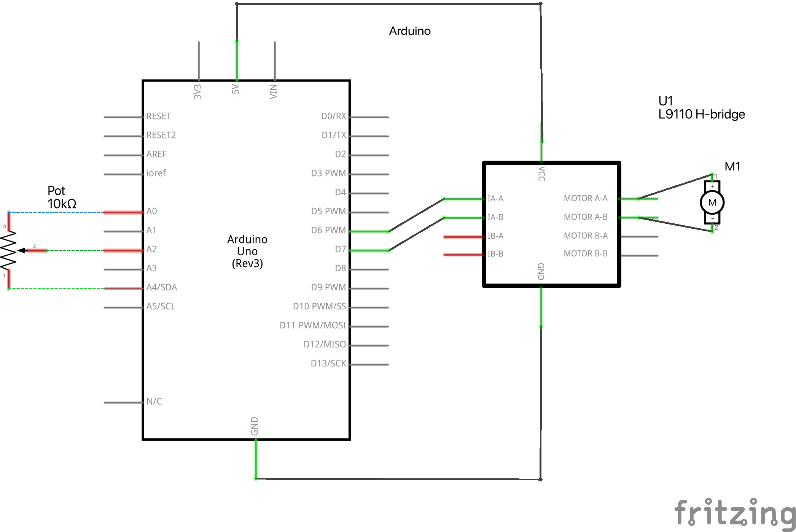

Arduino Program

Overview:
Now that I had a motor that moved in my kinetic sculpture, I wanted something that would be able to control the speed of the motor. I turned to a simple potentiometer code and circuit and in the end it worked out well.
Code:
void setup() {
pinMode(3, OUTPUT);
pinMode(A0, OUTPUT);
pinMode(A4, OUTPUT);
digitalWrite(A0, LOW);
digitalWrite(A4, HIGH);
}
void loop() {
int pot_value = analogRead(A2);
int motor_speed = map(pot_value, 0, 1023, 255, 0);
analogWrite(3, motor_speed);
delay(1);
}
The setup() method defines pin modes. Pin 3 is set up to control the motor speed as an output pin. Additionally set are the output pins A0 and A4. A0 is tied to the potentiometer's ground (GND) in this configuration, while A4 is attached to the device's 3.3-volt power source. The majority of the code is really executed inside the loop() method. The analog value is read from pin A2, which is where the potentiometer's wiper is connected. The analogRead() function returns a value between 0 and 1023 that represents the voltage level read from the potentiometer. The map() method is then used to translate the potentiometer data into the appropriate motor speed. A potentiometer value, which ranges from 0 to 1023, is changed into a motor speed range, which ranges from 255 to 0. In other words, when the potentiometer reading is zero, the motor speed will be set to its maximum (255), and when it is 1023, it will be set to its minimum ((0)). Pin 3 is output with the mapped motor speed using the analogWrite() technique to control the speed of the motor driver. The delay(1) function adds a quick 1-millisecond delay before the following iteration of the loop to give the motor some time to stabilize.
Schematic:
